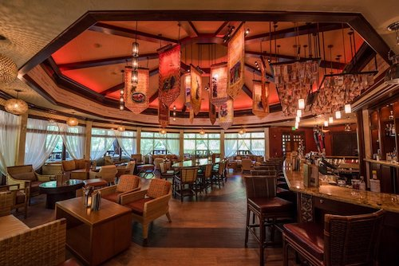

I migliori Lounge di Walt Disney World
By Valentina
12 Ottobre 2021
Visitare i migliori ristoranti di Walt Disney World senza
prenotazione? Possibile!
Dopo aver esplorato i migliori ristoranti di
Magic Kingdom,
Epcot
e
Hollywood Studios, ed
Animal Kingdom, vi voglio parlare dei Lounge, alternativa
validissima ai ristoranti Table Service.
Immaginate di essere a Walt Disney World ma vi siete
dimenticati di prenotare i ristoranti con 60 giorni di
anticipo, e vi siete già stancati dei quick service. Ecco la
soluzione per voi: cibo e atmosfera da ristorante Table
Service assicurata!
In questa top 5 troverai il meglio del meglio dei lounge di
Disney World!
5. California Grill Lounge

Immagine di disneytouristblog.com
California Grill è uno dei ristoranti più belli di tutta
Walt Disney World. Situato all'ultimo piano del Contemporary
Resort, alla sera è il posto perfetto per vedere i fuochi
d'artificio sopra Magic Kingdom. Problema: questo
ristorante, come molti Table Service è molto difficile da
prenotare (quasi sempre sold-out) e anche abbastanza
costoso. La soluzione? Visitare il suo Lounge! Il California
Grill Lounge, come tutti gli altri di questa lista, non
accetta prenotazioni: vi basterà recarvi all'ingresso del
ristorante per sapere i tempi di attesa per accomodarvi nell'area lounge.
Per questo ristorante è consigliato recarsi alla reception alle 5 del pomeriggio, ovvero l'orario di apertura del ristorante.
Per quanto riguarda il cibo, vi sarà possibile ordinare dallo stesso menù del ristorante principale.
link con tutto il menù.
4. Brown Derby Lounge
Il Brown Derby Lounge è il Lounge dell'Hollywood Brown Derby, replica di un iconico ristorante di Hollywood e situato proprio all'interno degli Hollywood Studio.
Stessa situazione di prima: il Brown Derby Lounge è spesso sold-out anche se cercherete di prenotarlo con largo anticipo, ma il suo lounge, situato all'esterno del vero e proprio ristorante, risolverà i vostri problemi.
Come per il California Grill, anche se vi trovate nel lounge, avrete accesso al menù completo del ristorante principale.
Il menù completo è qui.
3. Tune-in Lounge
Il Tune-in Lounge appartiene al famosissimo ristorante degli Hollywood studios: 50's Prime Time Cafè che si è aggiudicato il secondo posto nella nostra lista di migliori ristoranti del parco.
Se non siete riusciti ad assicurarvi un tavolo nel famosissimo ristorante, ma volete lo stesso dargli un'occhiata, il lounge potrebbe lo stesso fare al caso vostro.
Attenzione però! A differenza dei primi due ristoranti, questo lounge offre un menù di soli cocktails, direttamente dal bar del babbo (se conoscete la backstory, saprete di cosa sto parlando).
Il menù dei drinks lo trovate
qui.
2. Space 220 Lounge
Il più nuovo - e probabilmente il più frequentato - di tutti i lounge non poteva che essere quello di Space 220. Se non vi interessa il menù fisso del ristorante spaziale (o non volete investire $55 per pranzo e $79 per cena), ecco che il lounge è la soluzione adatta per voi.
Il lounge di Space 220 si trova dentro al ristorante spaziale (ha una zona bar dedicata, oltre che a qualche tavolo), e come tutti gli altri lounge della lista, non accetta prenotazioni.
Il menù di questo lounge è leggermente diverso da quello del ristorante: ci sono piatti più "tipici", tra cui burgers, e chiaramente tutti i cocktails del menù principale.
Puoi dare un'occhiata al menù
qui.
1. Nomads Lounge
Questo posto è talmente bello e famoso, che molti non sanno nemmeno che è nato come lounge per uno dei ristoranti più ricercati di tutta Animal Kingdom: Tiffins, di cui vi ho parlato nell’articolo dedicato ai migliori ristoranti di Animal Kingdom.
Il menù in questo caso è una rivisitazione di quello di Tiffins, con piatti abbastanza ricercati, cocktails spettacolari e una vista sulle vie d'acqua di Animal Kingdom che lo rendono ideale anche solo per una pausa durante la giornata.
Puoi vedere il menù completo
qui.
_ _ _
Se quest’articolo è stato interessante, non dimenticarti
di seguirci sul podcast “Aperitivo a Main Street, U.S.A.”,
disponibile su Spotify, Anchor e tutte le altre maggiori piattaforme audio!